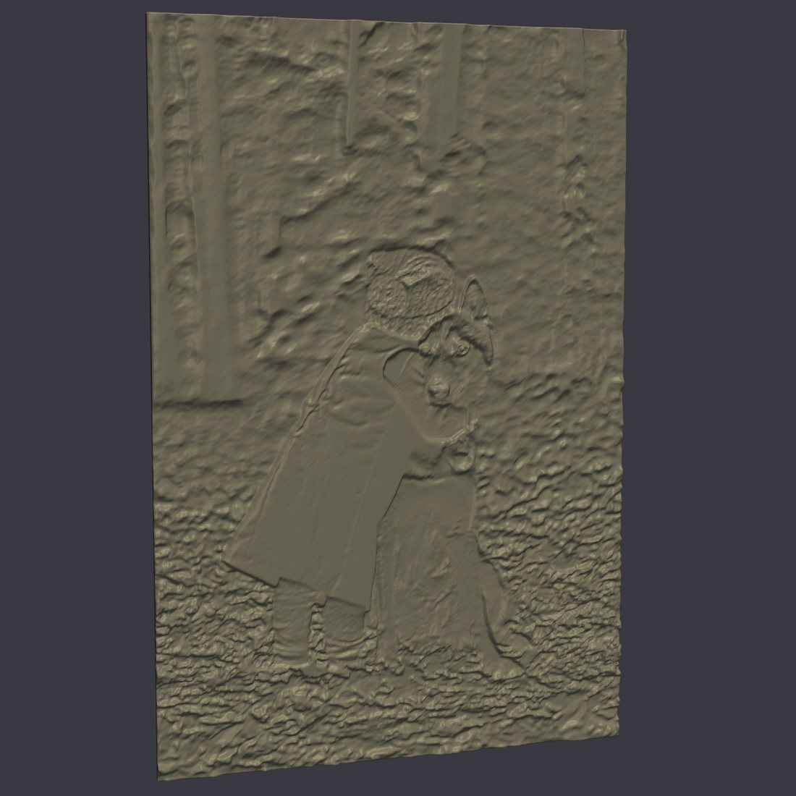
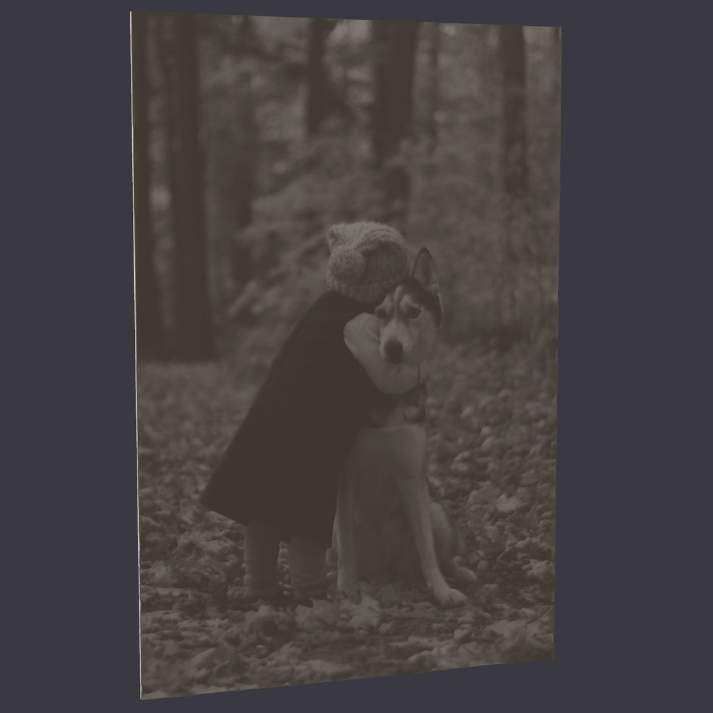
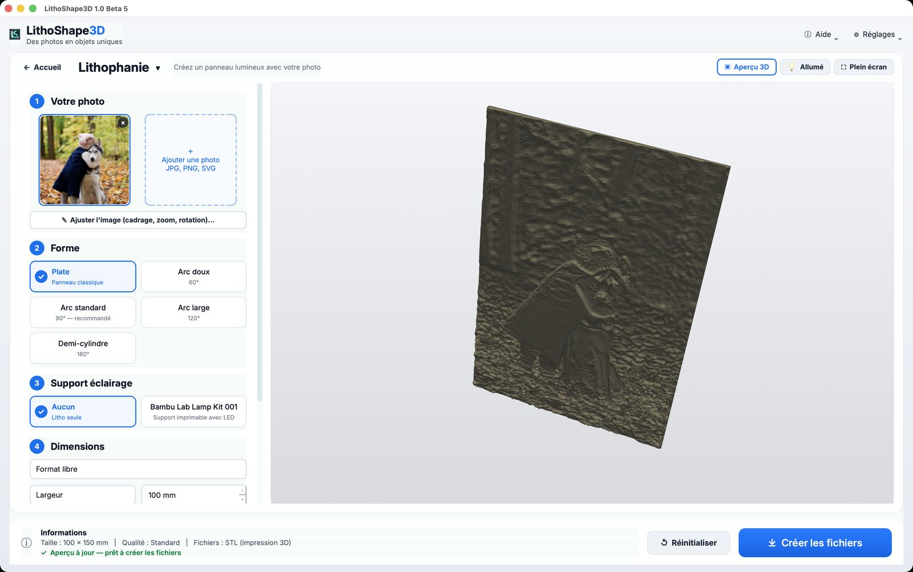
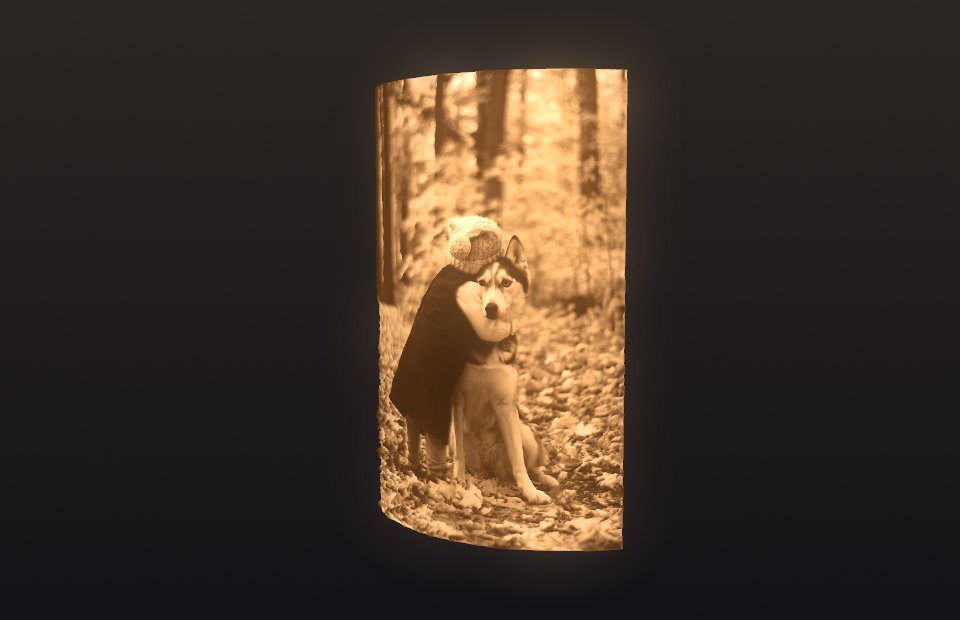
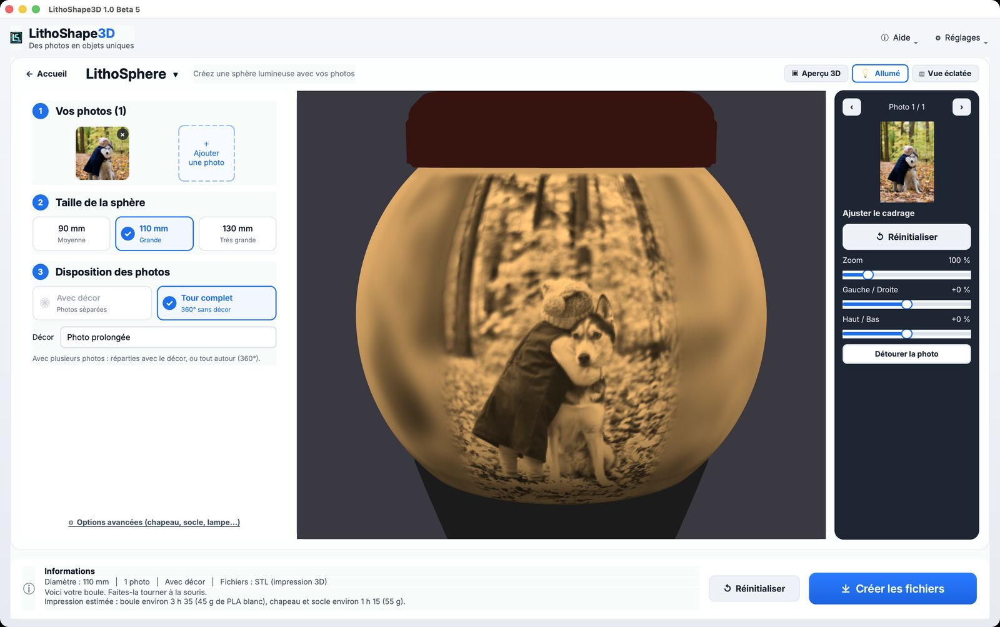
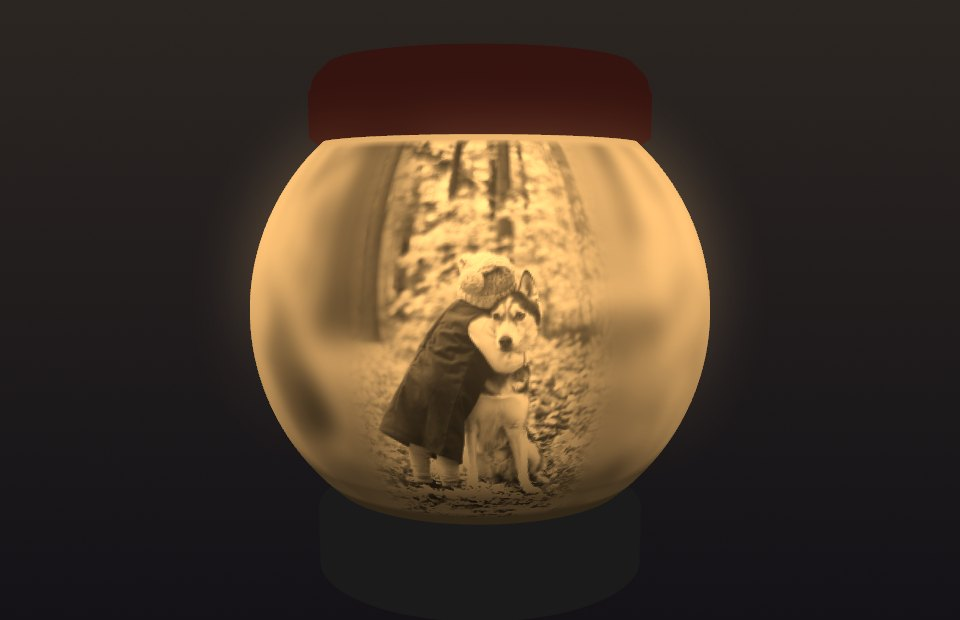
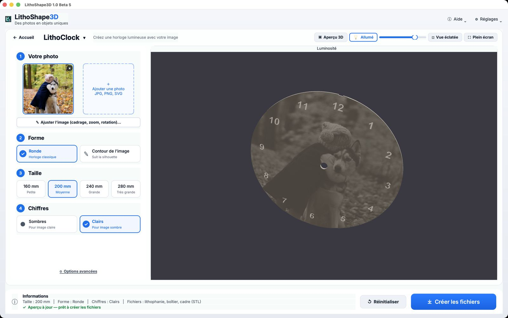
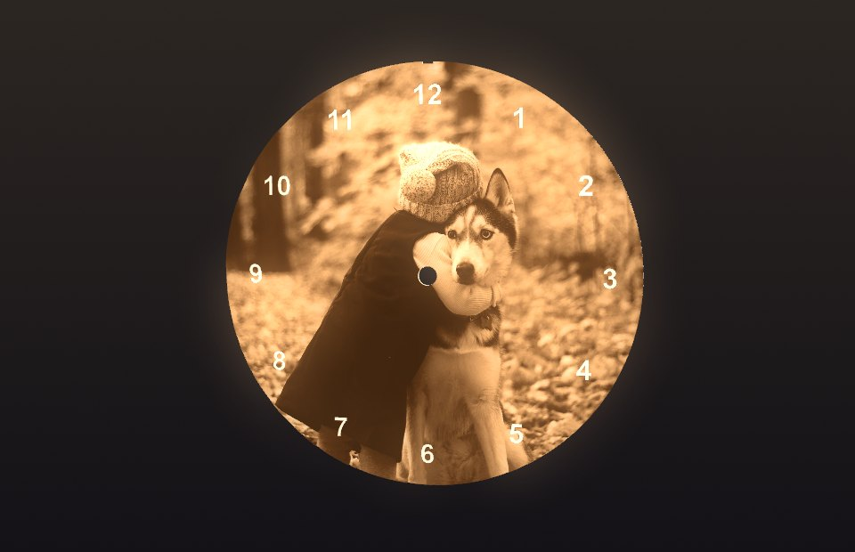
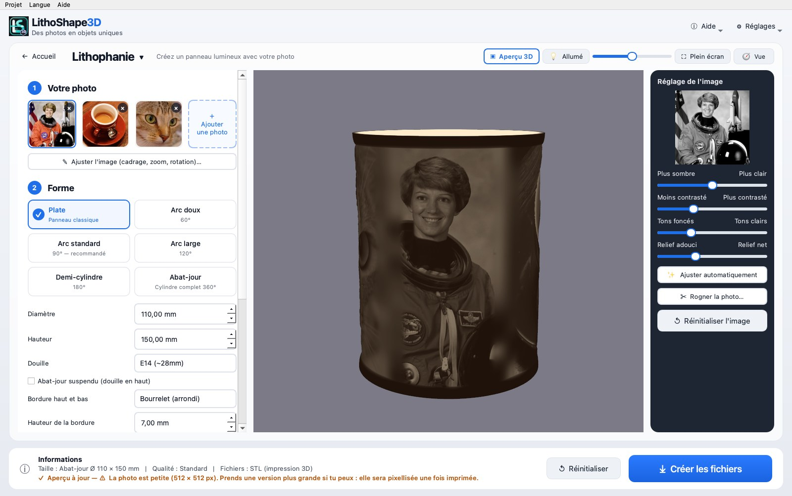
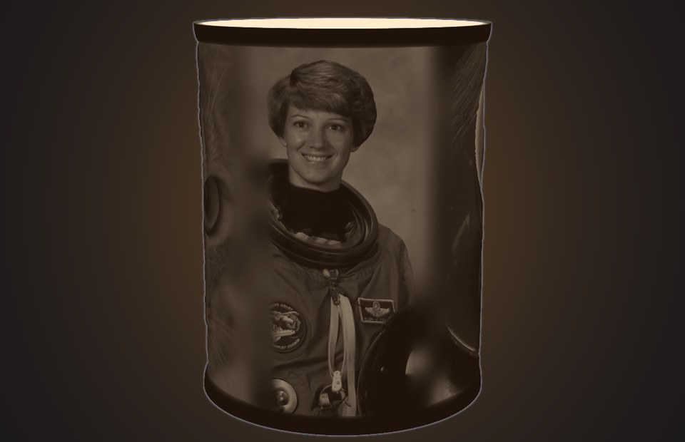

Your photos, as glowing objects.
LithoShape3D turns a photo into a lithophane, a sphere or a clock, ready to 3D print. You see the lit result before you even start printing.
- Lit preview before printing
- Runs locally, not in the cloud
- STL and 3MF exports


And there was light… and your photo appeared.
A lithophane is thicker or thinner depending on the photo. Drag the slider to see what light changes.
- 1Variable thickness
Dark areas of the photo are thicker, light areas are thinner.
- 2Light does the rest
A light source behind the piece shines through the plastic: the image appears.
- 3See it before printing
The “Lit” button in the software simulates this result on your screen.
Four creations, one software
Load a photo, pick a shape, adjust: the software handles the geometry.
The classic glowing panel
A photo on a flat or curved panel, with a lighting stand if you wish.
- Flat, soft arc, standard arc, wide arc, half-cylinder or lampshade
- Frame around the photo, crop, zoom and rotate the image
- Printable lighting stand (Bambu Lab Lamp Kit 001 or IKEA KAPPLAKE)


A sphere that lights up
One or several photos on a glowing sphere, with cap, riser and base.
- Automatic placement of several photos
- Caps, riser and base to print
- Lit preview and exploded view for assembly


A clock in your image
A clock made from your photo: numerals, case and frame.
- Light or dark numerals
- In glowing relief, or flat in several colors
- Case and frame included


A lampshade that lights up
A photo on a full 360° cylinder, to sit on a socket or to hang.
- Choose diameter and height; E14, E27 or custom socket
- Hanging version (socket on top) with the photo the right way up
- Several photos joined with a soft transition, top and bottom border


From photo to print file
Three steps, no complicated settings: the software suggests recommended values.
Add your photo
JPG, PNG or SVG. Crop, zoom and reframe to the format you want. Automatic background removal is available (model downloaded once).
Choose and look
Shape, size, thickness. The 3D preview updates, with the “Lit” button to see the backlit result.
Create the files
The software exports STL files (and multicolor 3MF) that you open in your slicer.
Built for real prints
What makes the difference between a nice image and a successful part.
Lit preview and exploded view
See the backlit result before printing, and understand the assembly before you start the first part.
“Flat” mode
2 to 4 colors printed flat, one filament per color (up to the 4 slots of an AMS), no supports.
Checked files
The software checks that meshes are closed and printable, and “Help → Check a file” re-reads an exported file.
On your computer, not in the cloud
Calculations run on your computer: your photos are never sent over the internet.
Windows and Mac
Windows 10/11, macOS Apple Silicon and Intel. Interface in French and English.
A step-by-step guide
Online installation and user guide, always up to date.
What's here, and what's just arrived
The software evolves with feedback from its testers.
Available now
- Lampshade, including a hanging version for a ceiling socket
- Printable lighting stand for the Bambu Lab Lamp Kit 001 and the IKEA KAPPLAKE
- Frame around the photo
- Photo checker: it flags a blurry, too dark, too bright or too small image
- Brighter lit preview, with a choice of light colour (warm, neutral, cool)
- LithoSphere: a stand for the Bambu Lab Lamp Kit 001 and for the IKEA KAPPLAKE
New in version 1.1.2
- Image adjustment: brightness, contrast, tones, relief sharpness, automatic adjustment and photo cropping
- Lampshade: several photos joined with a soft transition (no filler pattern), top and bottom border as a frame or a bead, hung preview shown the right way up
- STL files up to twice as light, and detail down to 0.1 mm per pixel
- KAPPLAKE stand with a cable channel
- Rebuild a stand at the right size: “Stand only” and “Measure an STL” from an already printed file
- You choose your file names, and nothing is overwritten without confirmation
Version 1.1.2 is available to download. Version 2.0, in beta with our testers, brings the LithoSphere with Smart Fit for several photos (whole faces, panorama all the way around). Thanks to the testers for their feedback.
What you can create
Download LithoShape3D
The preview is free. To create print files you need a license: a test license is available through the beta program.
Mac Apple Silicon
M1, M2, M3, M4
DownloadOn the page, pick the “…macOS-AppleSilicon.zip” file (about 350 MB).The software is not yet signed with Microsoft and Apple: a warning appears on first launch, this is expected. The guide explains how to allow it in one minute.
Frequently asked questions
Another question? Write to us.
What is a lithophane?
A 3D-printed plate whose thickness varies with the photo: thick areas let little light through, thin areas let a lot through. Lit from behind, the photo appears.
How do I get a license? What if I lose my key?
A test license is available through the beta program. If you lose your key, the same page offers “Lost your key?”. The support code shown in “Help → License” helps us find your license.
Are my photos sent over the internet?
No. Calculations run on your computer and your photos never leave it. Only license activation contacts the license server (key and device identifier).
Which files does it produce, and with which printers?
STL files, and multicolor 3MF for the “Flat” mode. They open in common slicers (Bambu Studio, OrcaSlicer, PrusaSlicer, Cura). The software does not drive the printer: your slicer prepares the print.
Why a warning during installation?
The software is not yet signed with Microsoft and Apple. Windows (“Windows protected your PC”) and macOS ask for confirmation on first launch. The installation guide shows what to do.
Can I sell my creations?
The test license is for personal, non-commercial use. An offer for professionals is in the works: write to us to be notified when it opens.